pacman::p_load(sf,tmap,tidyverse)Hands-on Exercise 2: Thematic Mapping and GeoVisualisation
Overview
Thematic mapping utilises map symbols to highlight geographic features that are not naturally visible. Examples include population, temperature and crime rate.
Geovisualisation, however, uses graphics to make a place, phenomenon, or process visible, tapping into our powerful spatial cognition and eye-brain vision system.
We will learn more about how to plot functional and truthful choropleth maps using the tmap package.
Setup
Packages
We will be using the following packages aside from tmap
- tidyverse
- readr - importing delimited text files
- tidyr - tidying data
- dplyr - wrangling data
- sf - handling geospatial data
Data
The following datasets will be used
- Master Plan 2014 Subzone Boundary Data
- Singapore Residents by Planning Are / Subzone, Age Group, Sex, and Dwelling
We first use st_read() to import the geospatial data into a variable called mpsz
mpsz <- st_read(dsn = "data/geospatial", layer = "MP14_SUBZONE_WEB_PL")Reading layer `MP14_SUBZONE_WEB_PL' from data source
`/home/syoongy/Documents/code/SMU/is415/IS415-GAA/Hands-on_Ex/Hands-on_Ex02/data/geospatial'
using driver `ESRI Shapefile'
Simple feature collection with 323 features and 15 fields
Geometry type: MULTIPOLYGON
Dimension: XY
Bounding box: xmin: 2667.538 ymin: 15748.72 xmax: 56396.44 ymax: 50256.33
Projected CRS: SVY21mpszSimple feature collection with 323 features and 15 fields
Geometry type: MULTIPOLYGON
Dimension: XY
Bounding box: xmin: 2667.538 ymin: 15748.72 xmax: 56396.44 ymax: 50256.33
Projected CRS: SVY21
First 10 features:
OBJECTID SUBZONE_NO SUBZONE_N SUBZONE_C CA_IND PLN_AREA_N
1 1 1 MARINA SOUTH MSSZ01 Y MARINA SOUTH
2 2 1 PEARL'S HILL OTSZ01 Y OUTRAM
3 3 3 BOAT QUAY SRSZ03 Y SINGAPORE RIVER
4 4 8 HENDERSON HILL BMSZ08 N BUKIT MERAH
5 5 3 REDHILL BMSZ03 N BUKIT MERAH
6 6 7 ALEXANDRA HILL BMSZ07 N BUKIT MERAH
7 7 9 BUKIT HO SWEE BMSZ09 N BUKIT MERAH
8 8 2 CLARKE QUAY SRSZ02 Y SINGAPORE RIVER
9 9 13 PASIR PANJANG 1 QTSZ13 N QUEENSTOWN
10 10 7 QUEENSWAY QTSZ07 N QUEENSTOWN
PLN_AREA_C REGION_N REGION_C INC_CRC FMEL_UPD_D X_ADDR
1 MS CENTRAL REGION CR 5ED7EB253F99252E 2014-12-05 31595.84
2 OT CENTRAL REGION CR 8C7149B9EB32EEFC 2014-12-05 28679.06
3 SR CENTRAL REGION CR C35FEFF02B13E0E5 2014-12-05 29654.96
4 BM CENTRAL REGION CR 3775D82C5DDBEFBD 2014-12-05 26782.83
5 BM CENTRAL REGION CR 85D9ABEF0A40678F 2014-12-05 26201.96
6 BM CENTRAL REGION CR 9D286521EF5E3B59 2014-12-05 25358.82
7 BM CENTRAL REGION CR 7839A8577144EFE2 2014-12-05 27680.06
8 SR CENTRAL REGION CR 48661DC0FBA09F7A 2014-12-05 29253.21
9 QT CENTRAL REGION CR 1F721290C421BFAB 2014-12-05 22077.34
10 QT CENTRAL REGION CR 3580D2AFFBEE914C 2014-12-05 24168.31
Y_ADDR SHAPE_Leng SHAPE_Area geometry
1 29220.19 5267.381 1630379.3 MULTIPOLYGON (((31495.56 30...
2 29782.05 3506.107 559816.2 MULTIPOLYGON (((29092.28 30...
3 29974.66 1740.926 160807.5 MULTIPOLYGON (((29932.33 29...
4 29933.77 3313.625 595428.9 MULTIPOLYGON (((27131.28 30...
5 30005.70 2825.594 387429.4 MULTIPOLYGON (((26451.03 30...
6 29991.38 4428.913 1030378.8 MULTIPOLYGON (((25899.7 297...
7 30230.86 3275.312 551732.0 MULTIPOLYGON (((27746.95 30...
8 30222.86 2208.619 290184.7 MULTIPOLYGON (((29351.26 29...
9 29893.78 6571.323 1084792.3 MULTIPOLYGON (((20996.49 30...
10 30104.18 3454.239 631644.3 MULTIPOLYGON (((24472.11 29...We now import the aspatial data in an R dataframe popdata
popdata <- read_csv("data/aspatial/respopagesextod2011to2020.csv")Rows: 984656 Columns: 7
── Column specification ────────────────────────────────────────────────────────
Delimiter: ","
chr (5): PA, SZ, AG, Sex, TOD
dbl (2): Pop, Time
ℹ Use `spec()` to retrieve the full column specification for this data.
ℹ Specify the column types or set `show_col_types = FALSE` to quiet this message.Data Preparation
We first want to prepare a data table with year 2020 values with the variables PA, SZ, YOUNG, ECONOMY ACTIVE, AGED, TOTAL, DEPENDENCY.
YOUNG: Age groups 0-4 until 20-24
ECONOMY ACTIVE: Age groups 25-29 until 60-64
AGED: Age group 65+
TOTAL: All age groups
DEPENDENCY: ratio between the YOUNG and AGED ages groups against the ECONOMY ACTIVE age group
Data Wrangling
We will now use pivot_wider() from tidyr along with mutate(), filter(), group_by() and select() from dplyr
popdata2020 <- popdata %>%
filter(Time == 2020) %>%
group_by(PA, SZ, AG) %>%
summarise(`POP` = sum(`Pop`)) %>%
ungroup() %>%
pivot_wider(names_from = AG, values_from = POP) %>%
mutate(`YOUNG` = rowSums(.[3:6]) + rowSums(.[14])) %>%
mutate(`ECONOMY ACTIVE` = rowSums(.[7:13])+rowSums(.[15])) %>%
mutate(`AGED` = rowSums(.[16:21])) %>%
mutate(`TOTAL` = rowSums(.[3:21])) %>%
mutate(`DEPENDENCY` = (`YOUNG` + `AGED`)/`ECONOMY ACTIVE`) %>%
select(`PA`, `SZ`, `YOUNG`, `ECONOMY ACTIVE`, `AGED`, `TOTAL`, `DEPENDENCY`)`summarise()` has grouped output by 'PA', 'SZ'. You can override using the
`.groups` argument.Joining attribute and geospatial data
As the values in the PA and SZ fields are made up of upper- and lowercase characters, we will need to convert them all into uppercase to be used when joining with SUBZONE_N and PLN_AREA_N.
popdata2020 <- popdata2020 %>%
mutate_at(.vars = vars(PA, SZ),
.funs = list(toupper)) %>%
filter(`ECONOMY ACTIVE` > 0)We can now properly join the data using the standardised names using left_join()
mpsz_pop2020 <- left_join(mpsz, popdata2020, by = c("SUBZONE_N" = "SZ"))We want to now save this into a file
write_rds(mpsz_pop2020, "data/mpszpop2020.rds")Choropleth Mapping Geospatial Data Using tmap
Choropleth mapping involves the symbolisation of enumeration units, such as countries, provinces, states, counties or census units, using area patterns or graduated colors.
Two approaches can be used to prepare thematic map using tmap, they are:
- Plotting quickly using
qtm() - Plotting highly customisable thematic maps by using
tmapelements
Plotting a choropleth map using qtm()
Using qtm() from the tmap package us the easiest and quickest way to draw a choropleth map. It provides a good and concise default vistualisation that covers a large number of cases.
tmap_mode("plot")tmap mode set to plottingqtm(mpsz_pop2020, fill = "DEPENDENCY")
From the code above, we set tmap_mode("plot") which provides us with a static map. If we required an interactive mode, “view” in replace of “plot” within tmap_mode() would be required. We should also note of the fill argument which selects which attribute we are mapping.
While useful for quickly producing a choropleth map, qtm() is not without disadvantages. Aesthetics of individual layers are hard to control.
Creating a choropleth map by using tmap’s elements
If we wanted to draw a high quality cartographic choropleth map, we want to use tmap’s drawing elements.
tm_shape(mpsz_pop2020)+
tm_fill("DEPENDENCY",
style = "quantile",
palette = "Blues",
title = "Dependency Ratio") +
tm_layout(main.title = "Distribution of Dependency Ratio by Planning Subzone",
main.title.position = "center",
main.title.size = 1.2,
legend.height = 0.45,
legend.width = 0.35,
frame = TRUE) +
tm_borders(alpha = 0.5) +
tm_compass(type = "8star", size = 2) +
tm_scale_bar() + tm_grid(alpha = 0.2) +
tm_credits("Source: Planning Sub-zone boundary from Urban Redevelopment Authorithy (URA)\n and Population data from Department of Statistics DOS",
position = c("left", "bottom"))
Now, let us break down the individual subfunctions used to make the above map
Base map
We use tm_shape() to define our input data and tm_polygons() to draw out the map.
tm_shape(mpsz_pop2020) + tm_polygons()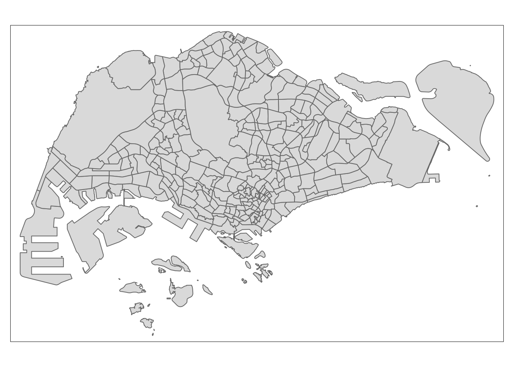
Draw a Choropleth Map with tm_polygons()
We now want to specify the variable we want to use for drawing the choropleth map
tm_shape(mpsz_pop2020) + tm_polygons("DEPENDENCY")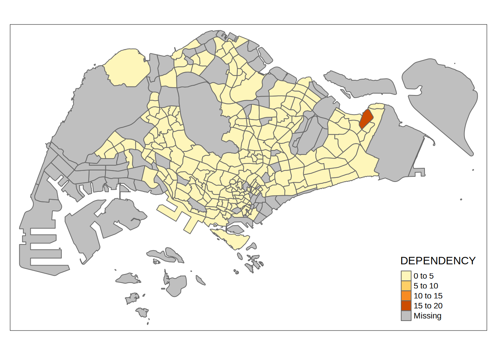
We should note that the default binning used to draw the choropleth map is called “pretty”, the default colour scheme used is YlOrRd from ColorBrewer and by default, missing values are shaded in grey.
Furthermore, tm_shape() is in fact a wrapper function of tm_fill() and tm_border(). tm_fill() shades the polygons using the default colour scheme while tm_border() adds the borders of the shapefile onto the choropleth map.
Drawing choropleth maps using tm_fill() and tm_border()
Let’s first see how tm_fill works when used alone
tm_shape(mpsz_pop2020) + tm_fill("DEPENDENCY")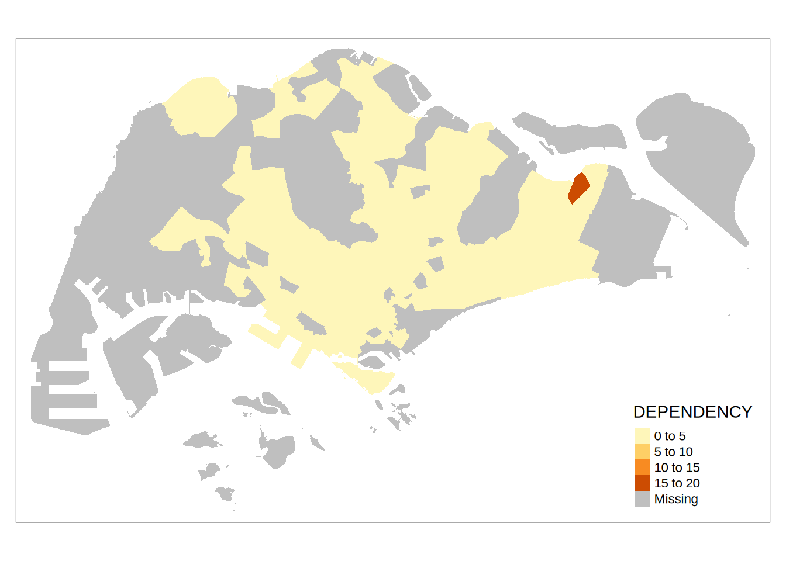
Notice how the planning subzones are shared according to the respective dependency values? We can solve this using tm_borders()
tm_shape(mpsz_pop2020) + tm_fill("DEPENDENCY") + tm_borders(lwd = 0.1, alpha = 1)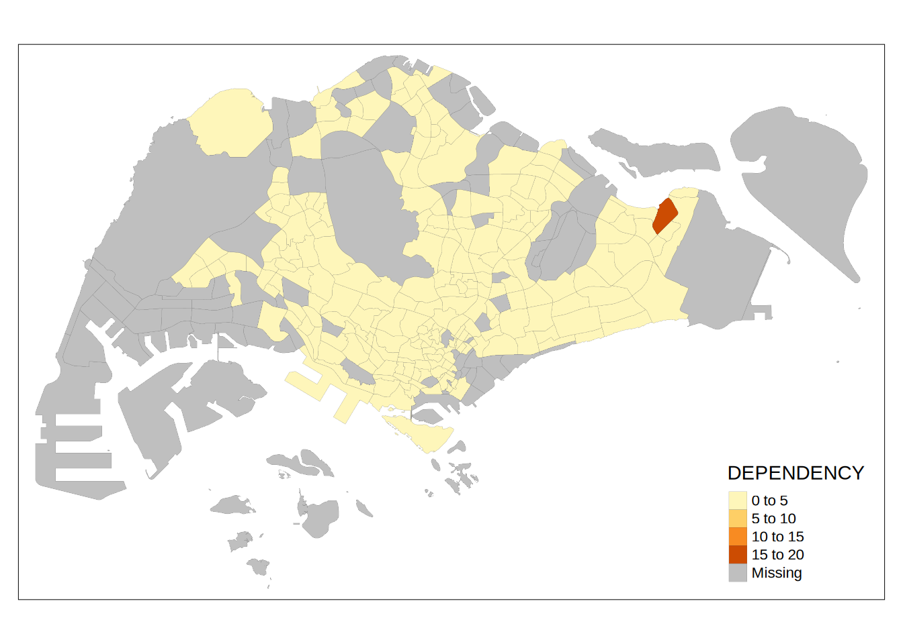
The alpha argument is used to define transparency using a value between 0 (transparent) and 1 (opaque). By default, the alpha value of the col is used (normally 1).
Besides alpha, there are three other arguments for tm_borders():
col -> border color,
lwd -> borderline width, default 1,
lty -> borderline type, default “solid’ .
Data Classification using tmap
tmap provides us with ten classification methods: fixed, sd, equal, pretty (default), quantile, kmeans, hclust, bclust, fisher, and jenks. These can be specified in tm_fill() or tm_polygons()
Kmeans example with 5 classes
tm_shape(mpsz_pop2020) + tm_fill("DEPENDENCY", n = 5, style = "kmeans") + tm_borders(alpha = 0.5)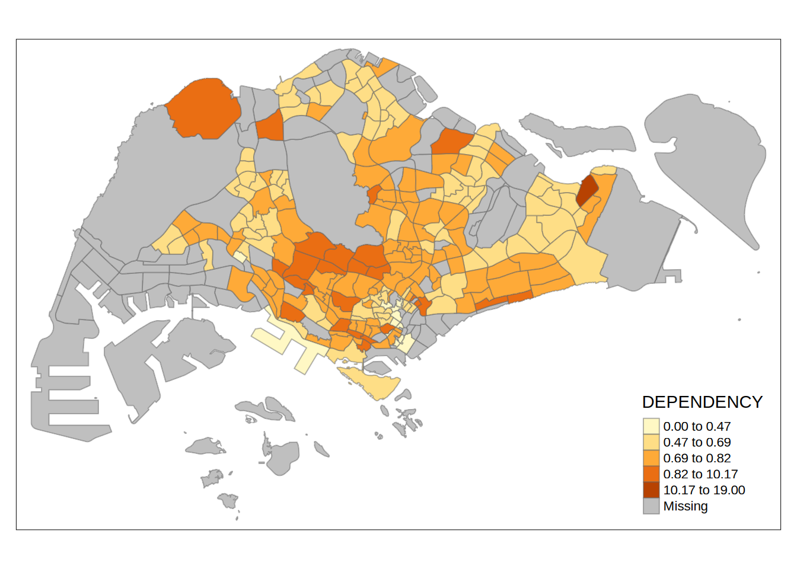
sd example with 5 classes
tm_shape(mpsz_pop2020) + tm_fill("DEPENDENCY", n = 5, style = "sd") + tm_borders(alpha = 0.5)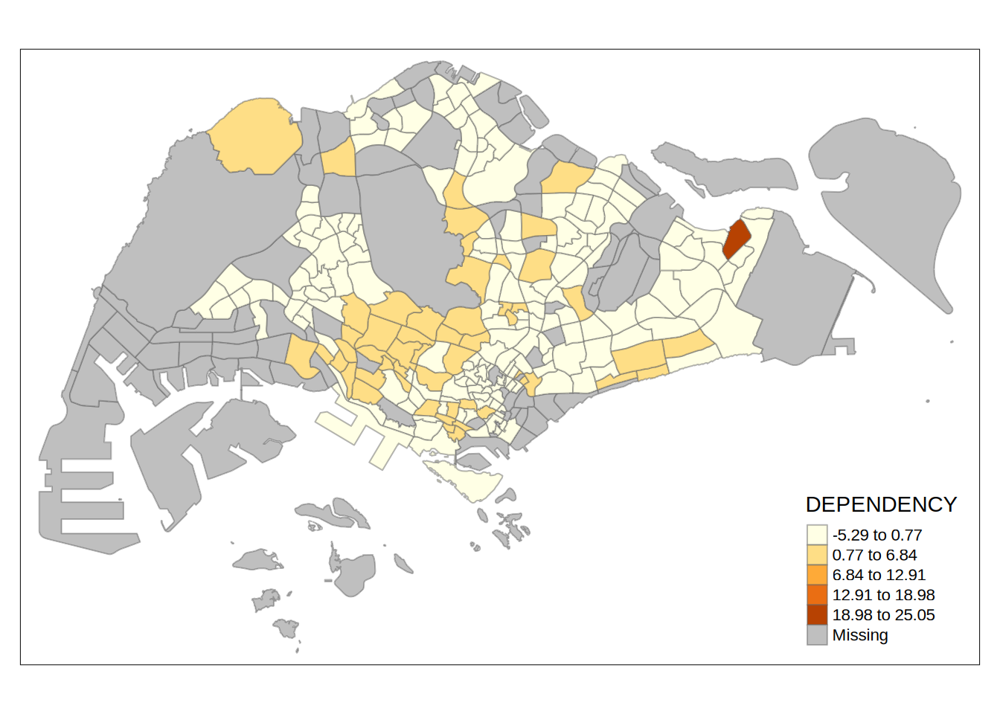
Choropleth Maps and Custom breaks
With built-in styles, category breaks are computed internally. To override defaults, we can set breakpoints using the breaks argument in tm_fill(). We should also not that tmap breaks have a maximum and minimum. Thus, to retrieve n categories, n+1 elements must be specified in the breaks argument in increasing order.
Before we explore more on this, let’s take a look at some statistics of the DEPENDENCY field.
summary(mpsz_pop2020$DEPENDENCY) Min. 1st Qu. Median Mean 3rd Qu. Max. NA's
0.0000 0.6519 0.7025 0.7742 0.7645 19.0000 92 Using the above results as reference, we set the breakpoints at .6, .7, .8, and .9. With the addition of the min and max breakpoints, the breaks vector is c(0, 0.6, 0.7, 0.8, 0.9, 1).
tm_shape(mpsz_pop2020) + tm_fill("DEPENDENCY", breaks = c(0, 0.50, 0.60, 0.70, 0.80, 1.00, 19)) + tm_borders(alpha = 0.5)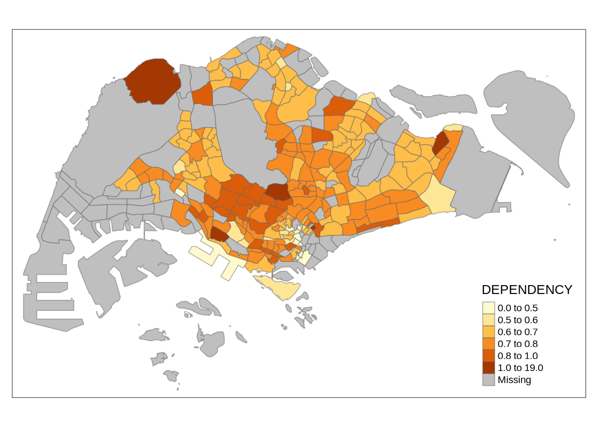
Colour Scheme
tmap supports custom colour ramps defined by the user, or from prebuilt sets from the RColorBrewer package
We can try this out using the Blues colour palette by setting the palette argument in tm_fill()
tm_shape(mpsz_pop2020) +
tm_fill("DEPENDENCY",
n = 6,
style = "quantile",
palette = "Blues") +
tm_borders(alpha = 0.5)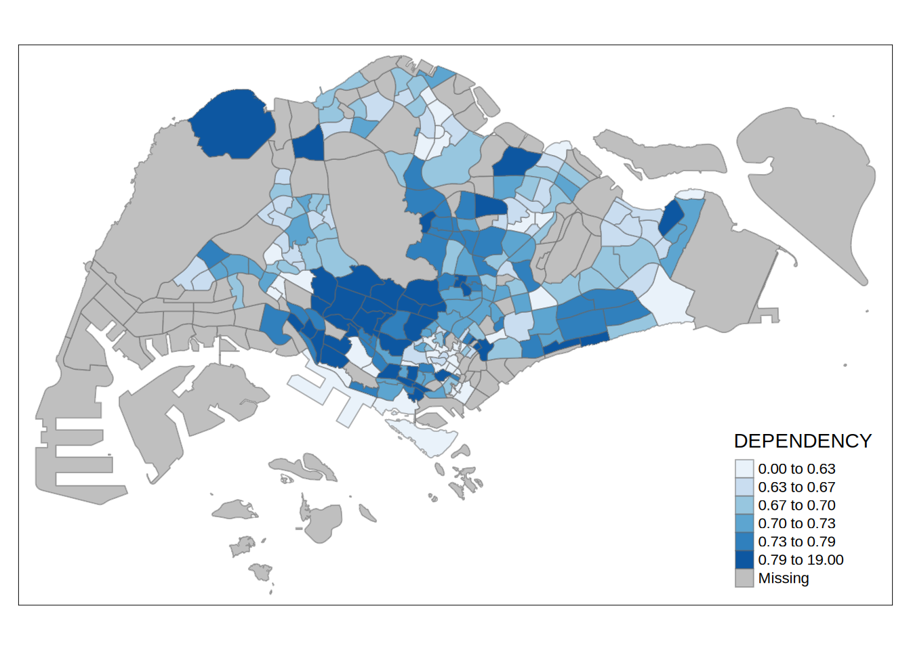
We can also reverse the colour shading by adding a - prefix
tm_shape(mpsz_pop2020) +
tm_fill("DEPENDENCY",
n = 6,
style = "quantile",
palette = "-Blues") +
tm_borders(alpha = 0.5)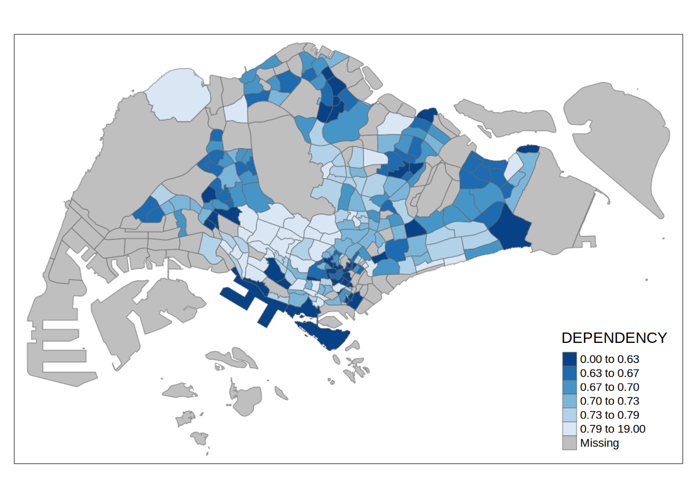
Map Layout
Map layout refers to the combination of all map elements into a cohensive map. Map elements include among others the objects to be mapped, the title, the scale bar, the compass, margins and aspects ratios.
Map Legend
Within tmap there are several options to modify a legend
tm_shape(mpsz_pop2020)+
tm_fill("DEPENDENCY",
style = "jenks",
palette = "Blues",
legend.hist = TRUE,
legend.is.portrait = TRUE,
legend.hist.z = 0.1) +
tm_layout(main.title = "Distribution of Dependency Ratio \nby Planning Subzone",
main.title.position = "center",
main.title.size = 1,
legend.height = 0.45,
legend.width = 0.35,
legend.outside = FALSE,
legend.position = c("right", "bottom"),
frame = FALSE) +
tm_borders(alpha = 0.5)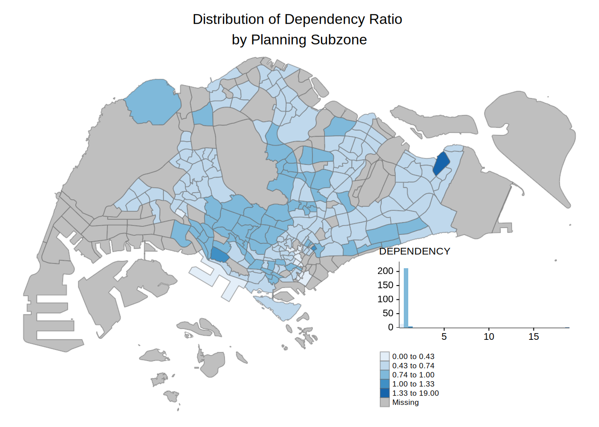
Map Style
tmap allows a wide variety of layout settings to be changed. They can be called by using tmap_style().
Let’s first try out the “classic” style
tm_shape(mpsz_pop2020) +
tm_fill("DEPENDENCY",
style = "quantile",
palette = "-Blues") +
tm_borders(alpha = 0.5) +
tmap_style("classic")tmap style set to "classic"other available styles are: "white", "gray", "natural", "cobalt", "col_blind", "albatross", "beaver", "bw", "watercolor" 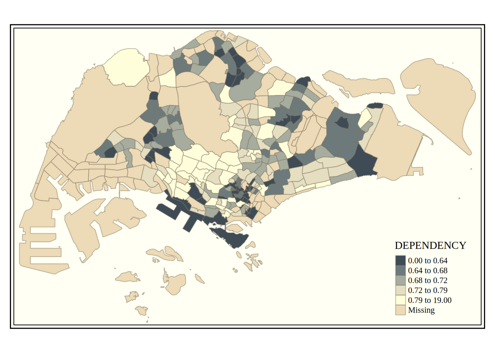
Cartographic Furniture
Compass, scale bar, and grid lines can also be added using tmap.
tm_shape(mpsz_pop2020)+
tm_fill("DEPENDENCY",
style = "quantile",
palette = "Blues",
title = "No. of persons") +
tm_layout(main.title = "Distribution of Dependency Ratio \nby Planning Subzone",
main.title.position = "center",
main.title.size = 1.2,
legend.outside.size = 0.2,
frame = TRUE) +
tm_borders(alpha = 0.5) +
tm_compass(type="8star",
size = 2) +
tm_scale_bar(width = 0.15) +
tm_grid(lwd = 0.1,
alpha = 0.2) +
tm_credits("sajdad",
position = c("left", "bottom"))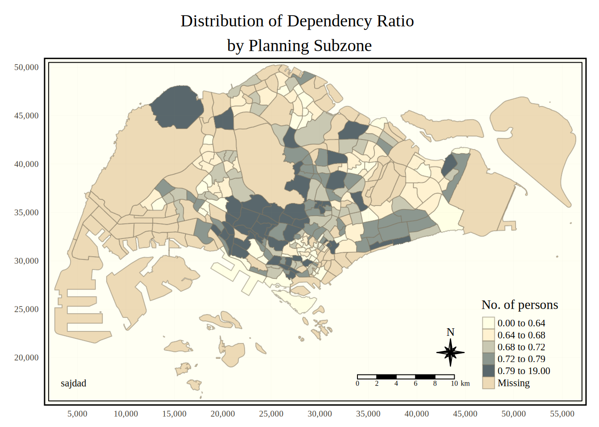
To reset styling, we can use tmap_style()
tmap_style("white")tmap style set to "white"other available styles are: "gray", "natural", "cobalt", "col_blind", "albatross", "beaver", "bw", "classic", "watercolor" Small Multiple Maps A.K.A Facet Maps
These maps are composed of many maps arrange side-by-side, and sometimes stacked vertically. Small multiple maps enable the visualisation of how spatial relationships change with respect to another variable, such as time.
There are 3 ways using tmap that we can plot these maps:
- assigning multiple values to at least one of the aesthetic arguments
- defining a group-by variable in
tm_facets() - creating multiple stand-alone maps with
tmap_arrange()
Using multiple values
In this example, small multiple choropleth maps are created by defining ncols in tm_fill()
tm_shape(mpsz_pop2020) +
tm_fill(c("YOUNG", "AGED"),
style = "equal",
palette = "Blues") +
tm_layout(legend.position = c("right", "bottom")) +
tm_borders(alpha = 0.5)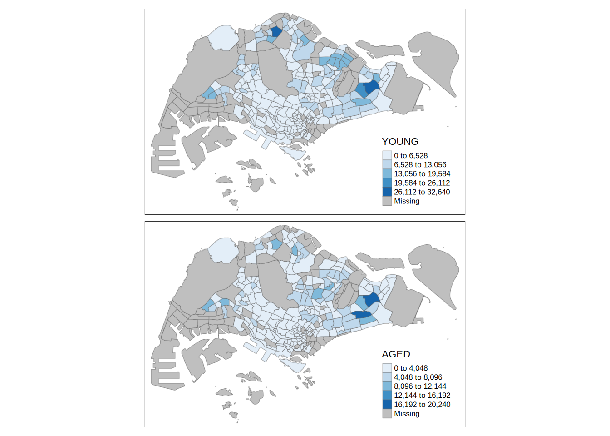
In this example, small multiple choropleth maps are created by assigning multiple values to at least one of the aesthetic arguments
tm_shape(mpsz_pop2020) +
tm_polygons(c("DEPENDENCY", "AGED"),
style = c("equal", "quantile"),
palette = list("Blues", "Greens")) +
tm_layout(legend.position = c("right", "bottom"))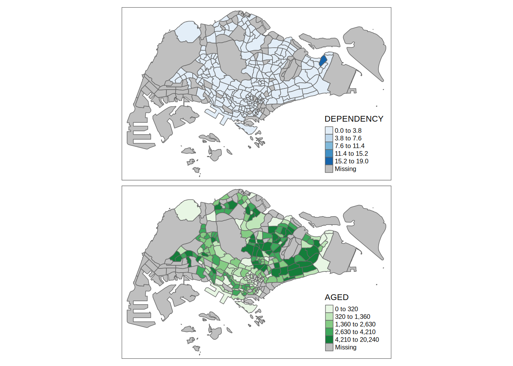
Group-by variable in in tm_facets()
In this example, multiple small choropleth maps are created by using tm_facets().
tm_shape(mpsz_pop2020) +
tm_fill("DEPENDENCY",
style = "quantile",
palette = "Blues",
thres.poly = 0) +
tm_facets(by="REGION_N",
free.coords = TRUE,
drop.units = TRUE) +
tm_layout(legend.show = FALSE,
title.position = c("center", "center"),
title.size = 20) +
tm_borders(alpha = 0.5)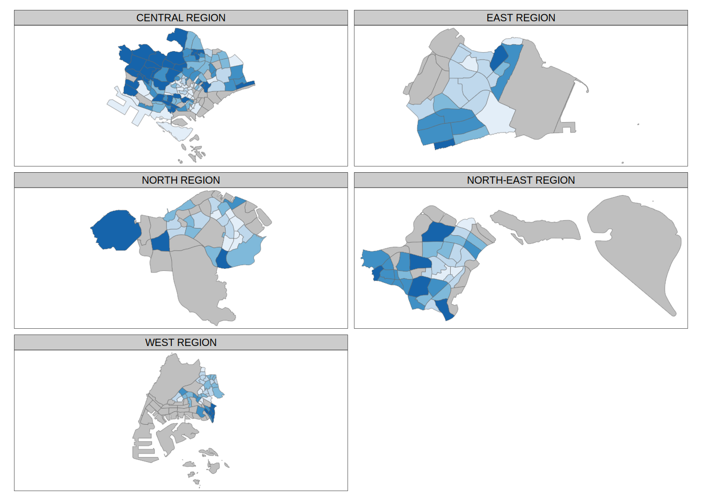
Creating multiple stand-alone maps with tmap_arrange()
In this example, multiple small choropleth maps are created by creating multiple stand-alone maps with tmap_arrange().
youngmap <- tm_shape(mpsz_pop2020) + tm_polygons ("YOUNG", style = "quantile", palette = "Blues")
agedmap <- tm_shape(mpsz_pop2020) + tm_polygons ("AGED", style = "quantile", palette = "Blues")
tmap_arrange(youngmap, agedmap, asp=1, ncol=2)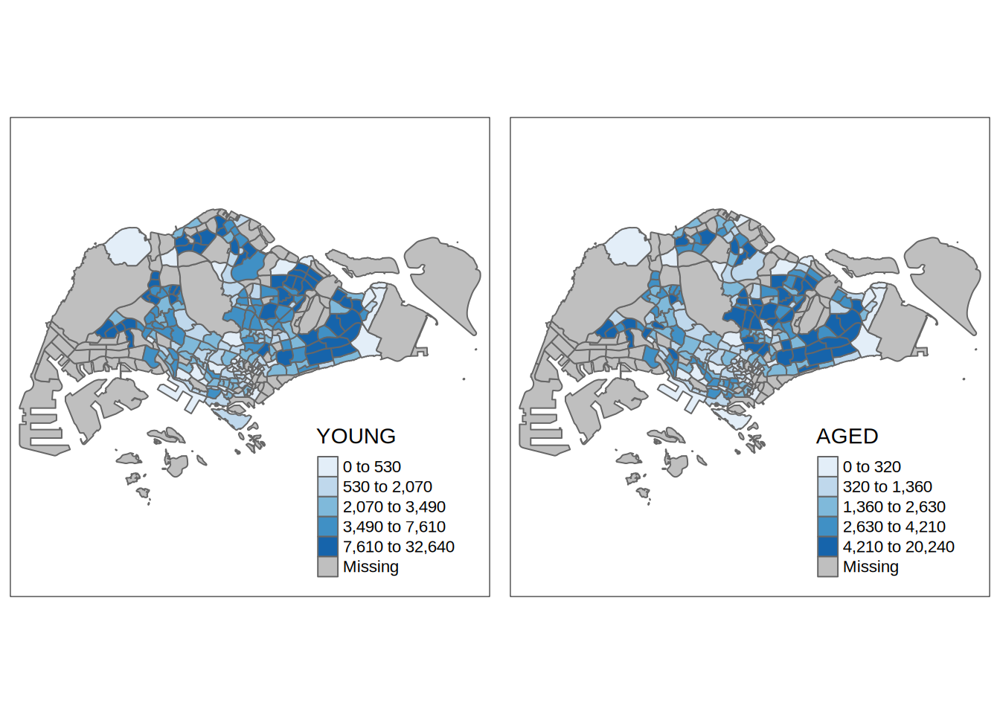
Selection Criteria
Instead of creating a facet map, the selection function can be used to map spatial objects meeting the selection criterion.
tm_shape(mpsz_pop2020[mpsz_pop2020$REGION_N=="CENTRAL REGION", ]) +
tm_fill("DEPENDENCY",
style = "quantile",
palette = "Blues",
legend.hist = TRUE,
legend.is.portrait = TRUE,
legend.hist.z = 0.1) +
tm_layout(legend.outside = TRUE,
legend.outside.size = 0.2,
legend.outside.position = c("right", "bottom"),
frame = FALSE) +
tm_borders(alpha = 0.5)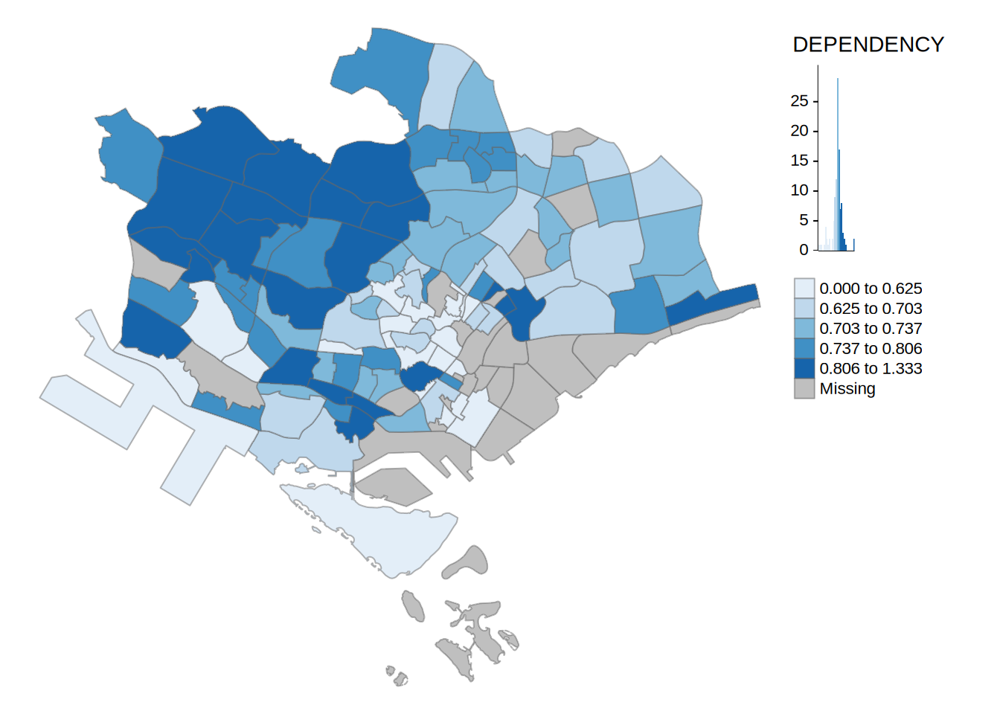